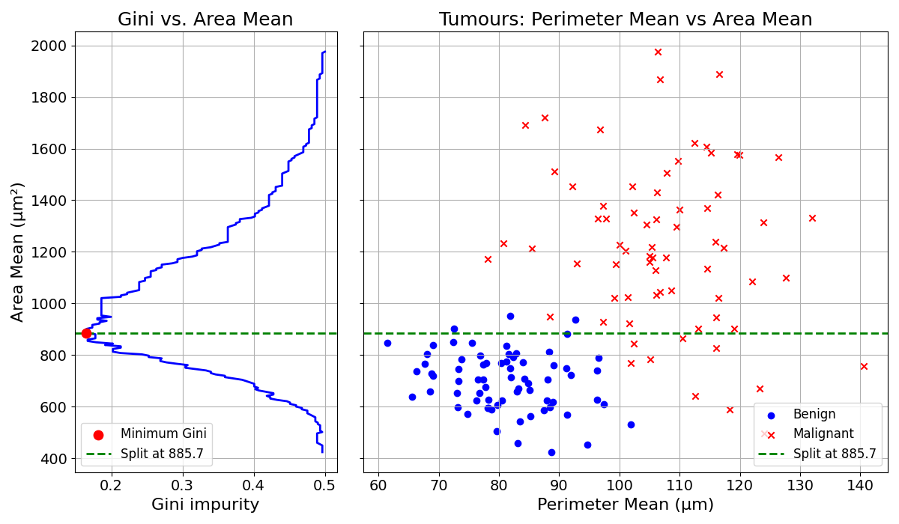

12 Evaluating Splits
In most problems, the different groups cannot be separated. Going back to the tumour diagnosis example, the training data looks messy:

How could we build a tree from there?
12.1 Best Split First
We could start by finding the best split, the split that separates the data best. The split will create two groups:

For each of the new groups, we can find the best splits, apply them, and create two new groups:

We can keep splitting until the subgroups are “pure”; i.e., there are only observations belonging to the same class.
In practice, other constraints are applied. In general it makes sense to limit the depth of a tree to make the size of the resulting model manageable. These simple models generally have stronger generalisation abilities.
The depth of a tree is the distance from the root node, here the first split, to the leaf node, here the last node, responsible for assigning the prediction.
What is the depth of the tree built in the previous examples?

It is two, as there are two edges (connections) on the path from the root node (top) to the leaf node (bottom).
12.2 Gini Impurity Coefficient
How would you measure the quality of a split? Or the purity of the resulting groups?
Imagine that Split 1 creates the following two groups:
| Group | Malignant | Benign |
|---|---|---|
| A | 9 | 1 |
| B | 2 | 8 |
And that Split 2 creates the following two groups:
| Group | Malignant | Benign |
|---|---|---|
| C | 6 | 4 |
| D | 5 | 5 |
Intuitively, we know that Split 1 has done better, as the resulting subgroups are more homogeneous. Group A contains mostly malignant observations and Group B more benign ones. On the other hand, Group C and D are both mixed. But how to quantify this intuition?
This is exactly what the Gini Impurity Coefficient measures.
The Gini Coefficient measures “impurity” through the probability of randomly picking two items of different classes within the same group.
But why would this probability measure impurity? If this probability is low, it means that we are not likely to pick items of different classes. In other words, we are likely to pick items from the same class. This probability will be 0 if all the items of a group are of a single class.
On the other hand, when this probability is high, we are likely to pick items of a different class. This will happen when the group is mixed. It will be 1 in the extreme case in which the group contains only a single item from each class.
Let’s illustrate this with Group A in the table below:
| Group | Malignant | Benign |
|---|---|---|
| A | 9 | 1 |
If we randomly picked two items in this group (with replacement) what would be the probability of picking items from two different classes (malignant and benign)?
Try thinking about it before reading on.
To make this simpler, what is the probability to pick first a malignant tumour, then a benign tumour?
The probability of picking a malignant and benign tumour are the following: \[ P(\text{malignant}) = \frac{9}{9+1} = 0.9 \] \[ P(\text{benign}) = \frac{1}{9+1} = 0.1 \]
As the two picks are random and with replacement, the probability of picking one, then the other is:
\[ P(\text{malignant then benign}) = P(\text{malignant}) \cdot P(\text{benign}) = 0.9 \cdot 0.1 = 0.09 \]
Now, what would be the probability of picking a benign observation then a malignant one (reversing the order)? We have already computed the probabilities above, we just need to reverse the order: \[ P(\text{benign then malignant}) = P(\text{benign}) \cdot P(\text{malignant}) = 0.1 \cdot 0.9 = 0.09 \]
Which, by symmetry, gives the same results. As this sampling is independent, the probability of picking malignant then benign is the same as benign then malignant. To get the probability of these two events we just have to sum them:
\[ \begin{aligned} P(\text{picking items of different class}) &= P(\text{malignant then benign}) + P(\text{benign then malignant}) \\ &= 0.09 + 0.09 = 0.18 \end{aligned} \]
That is it, we have calculated the Gini Impurity Coefficient for Group A.
Exercise 12.1 Compute the Gini Impurity Coefficient for Group B and show that it is 0.32.
| Group | Malignant | Benign |
|---|---|---|
| B | 2 | 8 |
The Gini Impurity Coefficient of Group B is slightly higher than Group A, as it is slightly more mixed.
12.2.1 Evaluating Splits
Now, let’s get back to quantifying the quality of a split. To do so, we will compute the average Gini Coefficient of each split.
Split 1:
| Group | Malignant | Benign |
|---|---|---|
| A | 9 | 1 |
| B | 2 | 8 |
Split 2:
| Group | Malignant | Benign |
|---|---|---|
| C | 6 | 4 |
| D | 5 | 5 |
As covered in the previous section, we know the Gini Coefficient of both Group A and B: 0.18 and 0.32 respectively.
The average Gini Coefficient for Split 1, Group A and B, can be computed as follows:
\[ \frac{n_a}{n_a + n_b} \cdot \text{Gini}_{a} + \frac{n_b}{n_a + n_b} \cdot \text{Gini}_{b} \]
\[ \frac{10}{10+10} \cdot 0.18 + \frac{10}{10+10} \cdot 0.32 = 0.25 \]
Exercise 12.2 Compute the Gini Coefficients for both groups (C and D) in Split 2, and prove that they are equal to: 0.48 and 0.5 respectively.
| Group | Malignant | Benign |
|---|---|---|
| C | 6 | 4 |
| D | 5 | 5 |
Now, computing the average Gini Impurity Coefficient for Split 2, we get:
\[ \frac{n_c}{n_c + n_d} \cdot \text{Gini}_{c} + \frac{n_d}{n_c + n_d} \cdot \text{Gini}_{d} \]
We get:
\[ \frac{10}{10+10} \cdot 0.48 + \frac{10}{10+10} \cdot 0.5 = 0.49 \]
Concluding this section, Split 1 has an average Gini Impurity Coefficient of 0.25 compared to 0.49 for Split 2. It is the split that separates the data best.
Now that we have a way to measure the quality of a split, we can simply try splitting the data at all feature values for all features, and pick the best one.
12.3 Trying Different Splits
To find the best data split, the Decision Tree learning algorithm evaluates each possible splitting feature and value, and picks the one that has the lowest Gini Impurity Coefficient.
The example above only shows two different splits. This process can be repeated for all features and all splitting values. At each trial, the Gini Impurity Coefficient is recorded. The algorithm then selects the split achieving the lowest Gini Impurity Coefficient. This can be represented visually:

From the value 1.76, the split perfectly separates the two data classes, achieving a Gini Impurity Coefficient of 0.
But what happens when data is not fully separable? For these cases, the Gini Impurity Coefficient will not reach 0. Still, the split that achieves the lowers Gini Impurity Coefficient will be selected.
This splitting trial and error can be visualised with the tumour diagnosis dataset:
.
We first try splitting the data using the Perimeter Mean of the cell nuclei. The following line chart plots the Gini Impurity criterion for different splitting values over this feature.

This Gini Impurity Coefficient reaches a minimum of approximately 15.2 at a split value of about 96.6.
The same could be done with the Mean Area of the cell nuclei:

The Gini Impurity Coefficient reaches a minimum of approximately 16.5 at a split value of about 885.7.
The best split is obtained by splitting the data based on Perimeter Mean at 96.6. This process is repeated every time a group is split.
12.4 Final Thoughts
The Gini Impurity Coefficient is the measure used to evaluate the quality of a split in Decision Tree learning. A good split partitions the data into two homogeneous groups.
To train a Decision Tree model, the algorithm finds the best data splits, using the Gini Impurity Coefficient as evaluation criterion.
The next chapter will explore how this splitting process is applied recursively.
12.5 Solutions
Solution 12.1. Exercise 12.1
First, compute the probabilities:
\[ P(\text{malignant}) = \frac{2}{2+8} = 0.2 \] \[ P(\text{benign}) = \frac{8}{2+8} = 0.8 \]
Now, the probability of picking first a malignant tumour, then a benign tumour:
\[ P(\text{malignant then benign}) = P(\text{malignant}) \cdot P(\text{benign}) = 0.2 \cdot 0.8 = 0.16 \]
The probability of picking first a benign tumour, then a malignant tumour:
\[ P(\text{benign then malignant}) = P(\text{benign}) \cdot P(\text{malignant}) = 0.8 \cdot 0.2 = 0.16 \]
Sum the two to get the probability of picking items of different classes:
\[\begin{aligned} P(\text{picking items of different class}) &= P(\text{malignant then benign}) + P(\text{benign then malignant}) \\ &= 0.16 + 0.16 = 0.32 \end{aligned} \]
The Gini Impurity Coefficient is therefore \(0.32\). This is in line with our intuition as this number should be higher than for Group A, as Group B is more mixed.
Solution 12.2. Exercise 12.2
Group C
| Group | Malignant | Benign |
|---|---|---|
| C | 6 | 4 |
\[ P(\text{malignant}) = \frac{6}{6+4} = 0.6 \] \[ P(\text{benign}) = \frac{4}{6+4} = 0.4 \]
Now, the probability of picking first a malignant tumour, then a benign tumour:
\[ P(\text{malignant then benign}) = P(\text{malignant}) \cdot P(\text{benign}) = 0.6 \cdot 0.4 = 0.24 \]
The probability of picking first a benign tumour, then a malignant tumour:
\[ P(\text{benign then malignant}) = P(\text{benign}) \cdot P(\text{malignant}) = 0.4 \cdot 0.6 = 0.24 \]
Sum the two to get the probability of picking items of different classes:
\[ \begin{aligned} P(\text{picking items of different class}) &= P(\text{malignant then benign}) + P(\text{benign then malignant}) \\ &= 0.24 + 0.24 = 0.48 \end{aligned} \]
The Gini Impurity Coefficient for Group C is therefore \(0.48\).
Group D
| Group | Malignant | Benign |
|---|---|---|
| D | 5 | 5 |
\[ P(\text{malignant}) = \frac{5}{5+5} = 0.5 \] \[ P(\text{benign}) = \frac{5}{5+5} = 0.5 \]
Now, the probability of picking first a malignant tumour, then a benign tumour:
\[ P(\text{malignant then benign}) = P(\text{malignant}) \cdot P(\text{benign}) = 0.5 \cdot 0.5 = 0.25 \]
The probability of picking first a benign tumour, then a malignant tumour:
\[ P(\text{benign then malignant}) = P(\text{benign}) \cdot P(\text{malignant}) = 0.5 \cdot 0.5 = 0.25 \]
Sum the two to get the probability of picking items of different classes:
\[ \begin{aligned} P(\text{picking items of different class}) &= P(\text{malignant then benign}) + P(\text{benign then malignant}) \\ &= 0.25 + 0.25 = 0.5 \end{aligned} \]
The Gini Impurity Coefficient for Group D is therefore \(0.5\).